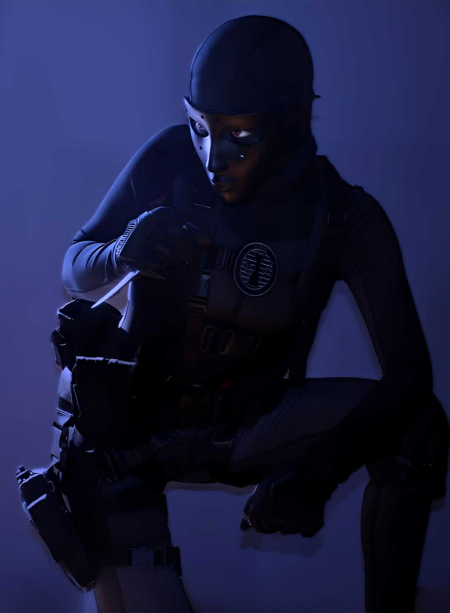

“You hide in darkness long enough... it becomes home.”
Background
Rozlin "Roze" Helms is a ruthless and highly trained shadow operative. Once part of the US Army’s elite unit, she went rogue and joined Shadow Company to serve her own sense of order and control. Highly tactical, she thrives in dark environments, using silence, stealth, and fear as weapons.
Preferred Loadout
- CR-56 AMAX (Stealth Suppressed)
- Renetti (Tactical Pistol)
- Dead Silence Perk
- Throwing Knife
- Smoke Grenade